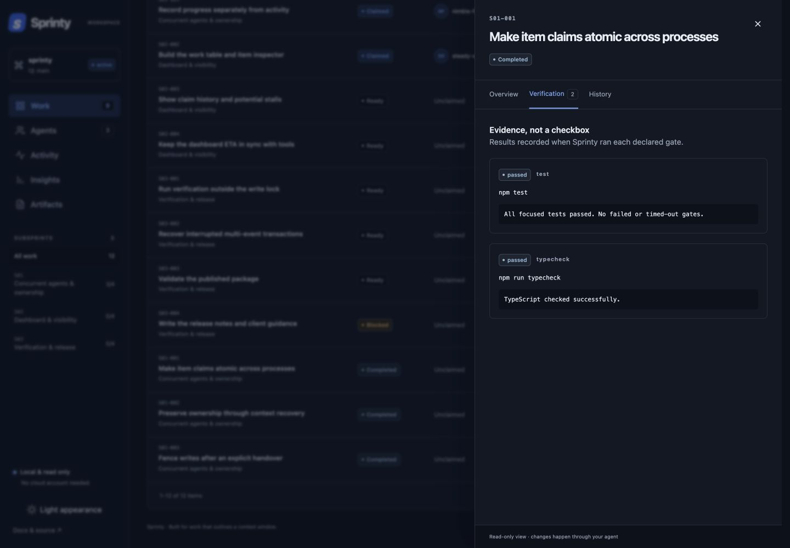
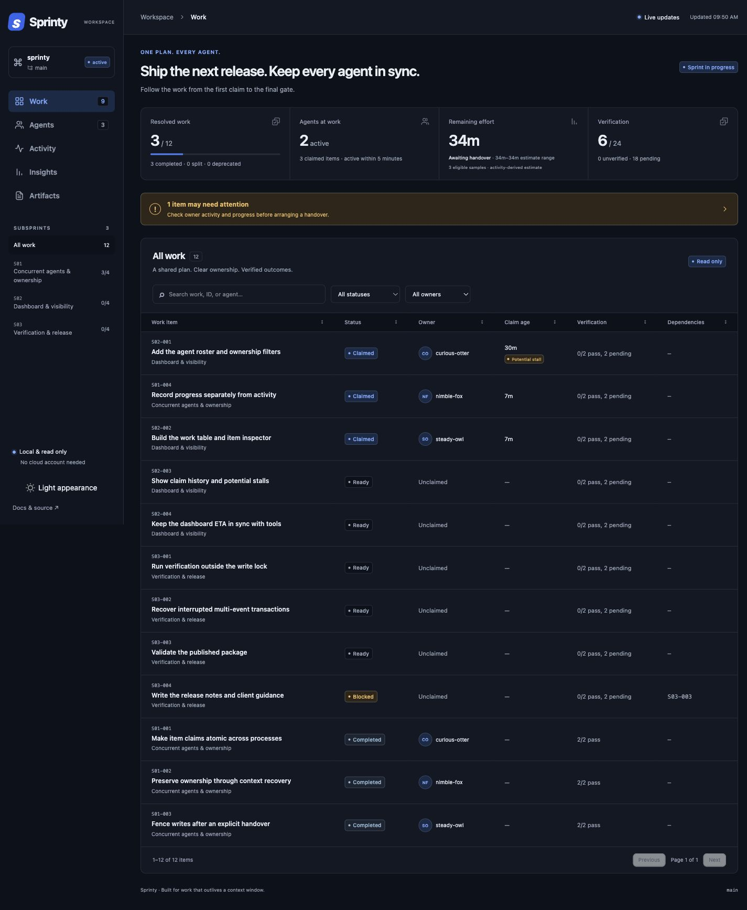
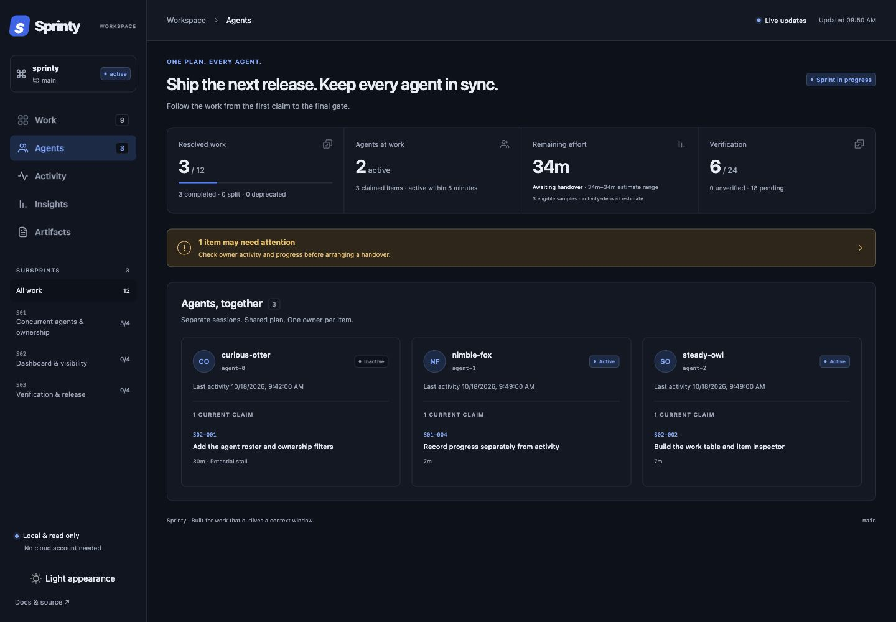
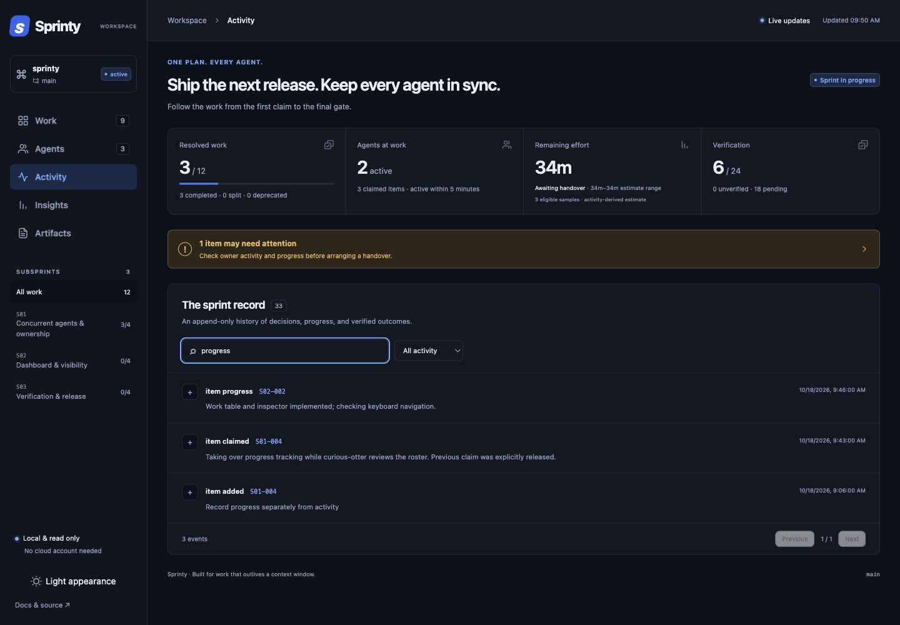

Make big projects manageable
Break goals into subsprints and focused tasks. Map dependencies so agents know what’s ready, what’s blocked, and what to do next. Give each task its own checks and evidence.

Plan, coordinate, and scale high-quality agent work.
curl -fsSL https://ebursztein.github.io/sprinty/install.sh | sh

Works with your favorite agent
Turn a complex project into manageable work—and keep your agents moving together from plan to completion.
Break goals into subsprints and focused tasks. Map dependencies so agents know what’s ready, what’s blocked, and what to do next. Give each task its own checks and evidence.

Run subagents and parallel sessions against one shared sprint. See who’s doing what, avoid duplicate work, and hand tasks between agents without losing decisions or progress.

Tasks, decisions, and progress survive compaction. Resume in a new session and pick up where you left off.
